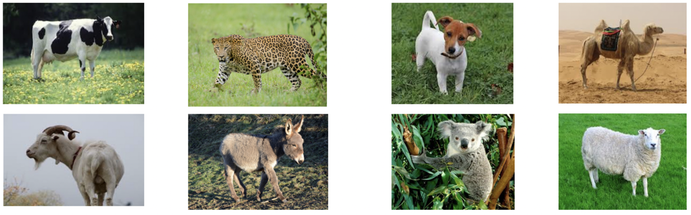

This task evaluates lexical comprehension where the target and the distractors are semantically related signs. Participants watch a video of an ISL sign and are required to select the picture which matches the sign out of 8 pictures. The non-target pictures are semantic competitors, representing concepts that are semantically related to the target sign.
The task includes 20 items.
Execution time is about 5 minutes.
Example item – target sign: SHEEP

This task evaluates lexical production. Participants are presented with a picture and are required to name it in ISL. The expected answers are nouns.
The task includes 91 items.
Execution time is about 15-20 minutes.
Example item – target sign: CARROT